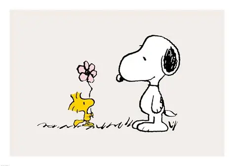

¿Quién es Snoopy?
Snoopy es un personaje de la historieta Peanuts, creada por Charles M. Schulz. Es un perro de raza beagle conocido por su imaginación, personalidad divertida y sus diferentes aventuras junto a Charlie Brown y sus amigos.
La personalidad de Snoopy
Snoopy es un personaje creativo, inteligente y muy imaginativo. En muchas historias utiliza su imaginación para convertirse en diferentes personajes, como un piloto de avión o un escritor famoso. También disfruta pasar tiempo con Woodstock.
Snoopy y Charlie Brown
Charlie Brown es uno de los personajes principales de Peanuts y tiene una relación muy especial con Snoopy. Aunque Snoopy suele actuar de manera independiente, ambos comparten muchas aventuras y momentos divertidos.
Justificación
Elegí el tema de Snoopy porque es un personaje reconocido por varias generaciones y tiene una personalidad muy divertida. Además, sus historias muestran valores como la amistad, imaginación y compañerismo. Conocer a sus personajes permite comprender por qué Peanuts se ha mantenido como una historieta importante durante muchos años.
Enlaces de referencia
Sitio oficial de Peanuts Información sobre Snoopy